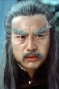

Also known as:虎豹龙蛇鹰 (original title)
Country:TW, 89 minutes
Spoken languages:Mandarin
Genres:Action
Director(s):Joseph Kuo
Writer(s):Joseph Kuo, Yao Ching Kang
Video Codec:Unknown
Number: 2783


Certification:NR
Storyline:
An aged Kung Fu practitioner travels across China, challenging the best Grandmaster from each province to prove his mastery of martial arts. Meanwhile is a plot developing behind his back.
Cast: 


Medium: VHS tape,
Loaned: No
Aspect ratio: Unknown